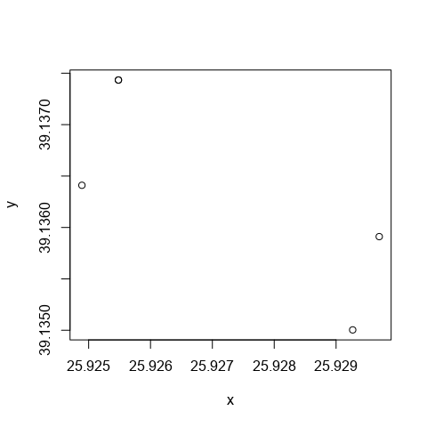

introduction
Dimitris Kavroudakis
2023-03-02
introduction.RmdExample Data in goal package
The goal package includes a sample dataset for the presentation of the uav examples.
library(goal)
data("goaldata.data2", package = "goal")
plot(goaldata.data2)
#xy=data.frame(x=c(25.92548,25.92970,25.92927,25.92489,25.92548), y=c(39.13743,39.13591,39.13500,39.13641,39.13743 ))
library(sp)
#coordinates(xy) <- ~x+y
#plot(xy)
These 5 points define a polygon area which is the area of our case study. We then use the ‘uav.GenerateTargets’ function to generate all possible targets in this area.
one = uav.GenerateTargets(goaldata.data2)##
## uav.GenerateTargets: reprojecting 'data2' to: '+init=epsg:2100'. I continue.
par(mar=c(0, 0, 0, 0))
plot(one$Polygon)
plot(one$simia, col= as.numeric(as.factor(one$simia$type)), add=TRUE,
pch=3*as.numeric(as.factor(one$simia$type)) )
plot(one$lines, add=T)
text(one$simia , labels = one$simia$id, col="brown", pos=2)
Your figure caption.
#library(rgdal)
#rgdal::writeOGR(one$simia,dsn=paste0("Targets.shp"),layer="Targets",driver="ESRI Shapefile", overwrite_layer = T)As you can see in the figure above, we generated 17 targets inside this polygon. These points are quite a few, and we do need to reduce them. We use the ‘uav.DoReduction’ function for reducing them based on the density of points.
When using the ‘uav.DoReduction’ function we need to define a cell size which will be used for the calculation of points density.
The plots bellow, show the calculation of focal density of points, under various cell sizes (5, 10, 15), in the study area and return a frequency table of number of cells per pixels:
library(knitr)
par(mar=c(0, 0, 3, 0))
five = uav.showFocal(insimia = one$simia, inpol=one$Polygon, toplot = T, size = 5) one
kable(as.data.frame(five), col.names=c("Number of points","Frequency"))| Number of points | Frequency |
|---|---|
| 1 | 1 |
| 2 | 3 |
| 3 | 1 |
| 4 | 4 |
| 5 | 3 |
| 6 | 4 |
| 7 | 2 |
| 9 | 3 |
| 10 | 2 |
ten = uav.showFocal(insimia = one$simia, inpol=one$Polygon, toplot = T, size = 10)
two
kable(as.data.frame(ten), col.names=c("Number of points","Frequency"))| Number of points | Frequency |
|---|---|
| 0 | 10 |
| 1 | 18 |
| 2 | 28 |
| 3 | 13 |
| 4 | 5 |
fifteen = uav.showFocal(insimia = one$simia, inpol=one$Polygon, toplot = T, size = 15)three
kable(as.data.frame(fifteen), col.names=c("Number of points","Frequency"))| Number of points | Frequency |
|---|---|
| 0 | 41 |
| 1 | 79 |
| 2 | 28 |
Points Reduction
Now we will use focal size 10 and will reduce the points in the area. We use the ‘DoReduction’ function:
result = goal::uav.DoReduction(one, insize=10)one
two
three

one
two
three

one
two
three

one
two
par(mar=c(0, 0, 3, 0))
plot(one$Polygon, main=paste0(length(one$simia)," initial points in grey\n",length(result)," final points in blue"))
#plot(one$simia, col="blue", add=TRUE, pch=20)
plot(one$simia, add=TRUE, col="grey")
text(one$simia, labels=one$simia$id, pos=4, col="grey")
plot(result, col="blue", pch=20, add=TRUE)
text(result, labels=result$id, pos=2, col="navyblue")three